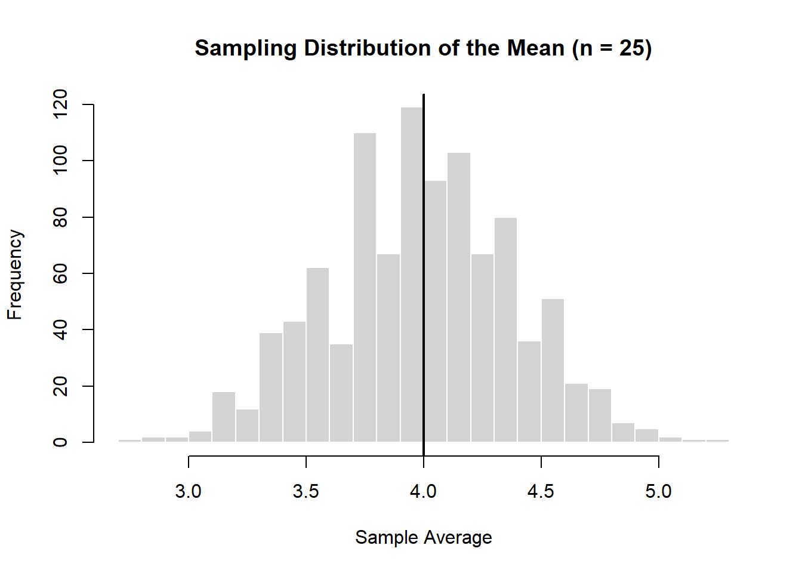
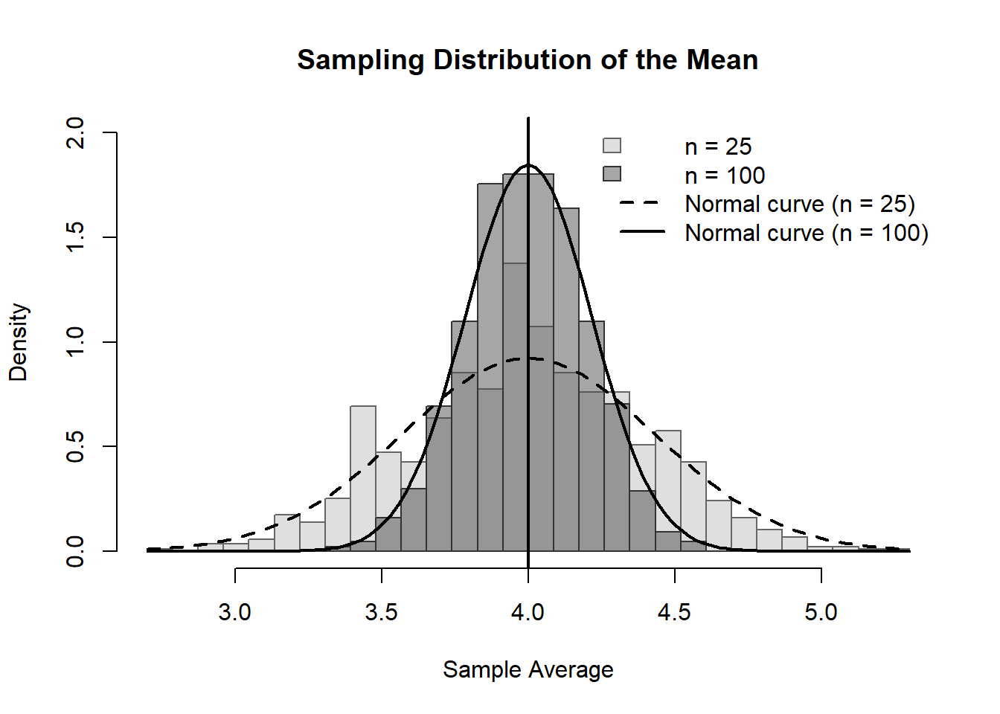
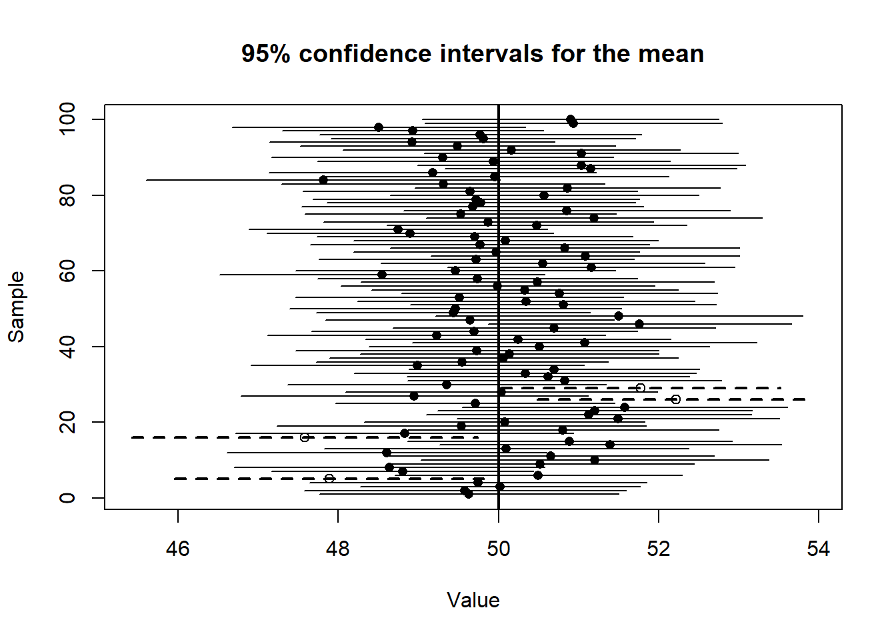

13.5 Simulation: Sampling Distribution of the Mean
To understand how the sample average behaves, we simulate repeated samples from the box.
# Set seed for reproducibilityset.seed(123)# Parametersn <-25# sample sizen_sims <-1000# number of simulations# Box with tickets 1 to 7box <-1:7# Simulate sample meansmeans <-replicate(n_sims, { sample_draws <-sample(box, size = n, replace =TRUE)mean(sample_draws)})# Plot histogramhist( means,breaks =30,main ="Sampling Distribution of the Mean (n = 25)",xlab ="Sample Average",border ="white")# Add true meanabline(v =mean(box), lwd =2)

NoteKey insight
Even though individual draws are spread out, the average is tightly concentrated around the population mean.
13.6 What happens if we increase the sample size?
As with the sum and the percentage, we can ask what happens to the expected value and standard error of the average when the sample size increases.
First, the expected value of the sample average does not depend on sample size. It remains equal to the population average.
However, the standard error becomes smaller as the sample size increases.
TipThe square-root law again
The larger the sample size, the smaller the standard error of the average. This means that the sample average is more likely to be close to the true population average.
If the sample size becomes \(n\) times larger, the standard error falls by a factor of \(\sqrt{n}\).
Let’s run the same code above, but this time with n=100.
13.6.1 Simulation: Effect of Sample Size on the Mean

NoteWhat to observe
Both distributions are centered at the same value (the true mean = 4)
The darker distribution (n = 100) is more tightly concentrated
Increasing the sample size reduces the standard error
13.7 Which standard error?
There are four common operations:
Sum
Average
Count
Percentage
Each has its own standard error.
13.7.1 Summary table
Quantity
Standard Error
Sum
\(\sqrt{n} \times SD\)
Average
\(SD / \sqrt{n}\)
Count
Same as sum (for 0–1 box)
Percentage
\((SE(\text{count}) / n) \times 100\)
ImportantImportant
All standard errors come from one fundamental idea:
\[
SE(\text{sum}) = \sqrt{n} \times SD
\]
Everything else is derived from this.
13.7.2 Unknown SD: bootstrapping idea
In practice, the SD of the box is often unknown.
We estimate it using the sample:
\[
SD(\text{box}) \approx SD^+
\]
NoteBootstrapping
When the population SD is unknown, use the sample SD as an estimate.
13.8 From averages to confidence intervals
So far, we have learned how to describe the accuracy of an average using the standard error.
But in practice, we usually want to go one step further:
We want to use the sample average to say something about the unknown population mean.
This is where confidence intervals for averages come in.
13.9 From standard error to confidence interval
Recall:
\[
SE(\text{average}) = \frac{SD}{\sqrt{n}}
\]
This tells us the typical size of the sampling error.
Using the empirical rule:
about 68% of sample averages fall within \(\pm 1\) SE
about 95% fall within \(\pm 2\) SE
about 99.7% fall within \(\pm 3\) SE
NoteKey idea
A 95% confidence interval for the population mean is:
\[
\text{sample average} \pm 2 \times SE
\]
13.9.1 Worked example
Suppose:
sample size: \(n = 100\)
sample average: \(\bar{X} = 50\)
sample SD: \(SD^+ = 10\)
Then:
\[
SE = \frac{10}{\sqrt{100}} = 1
\]
So the 95% confidence interval is:
\[
50 \pm 2(1) = [48, 52]
\]
TipInterpretation
We estimate that the population mean is between 48 and 52, with about 95% confidence.
13.9.2 Important interpretation
As before, we must be careful.
It is tempting to say:
There is a 95% chance that the true mean lies between 48 and 52.
This is not correct.
WarningCommon pitfall
The population mean is fixed.
The interval varies from sample to sample.
The correct interpretation is:
If we repeatedly took samples and constructed intervals in this way, about 95% of those intervals would contain the true mean.
13.9.3 Simulation: confidence intervals for averages
Let us simulate this idea.
set.seed(101)n <-100n_sims <-100mu_true <-50sd_true <-10results <-data.frame(sample_id =1:n_sims,mean =NA,lower =NA,upper =NA,covers =NA)for (i in1:n_sims) { x <-rnorm(n, mean = mu_true, sd = sd_true) m <-mean(x) se <-sd(x) /sqrt(n) lower <- m -2* se upper <- m +2* se results$mean[i] <- m results$lower[i] <- lower results$upper[i] <- upper results$covers[i] <- (lower <= mu_true) & (upper >= mu_true)}
How many intervals capture the true mean?
sum(results$covers)
[1] 96
Let’s plot the confidence intervals.

NoteHow to read the figure
Each horizontal line is a confidence interval
The vertical line is the true population mean
Most intervals cross the true value
A few do not — this is expected
13.10 Chapter summary
An estimator is a rule; an estimate is a number.
Good estimators are unbiased and efficient.
Sample averages vary due to sampling variation.
The standard error measures the typical size of this variation.
For averages:
\[
SE(\text{average}) = \frac{SD}{\sqrt{n}}
\]
Larger samples lead to more precise estimates.
All standard errors are derived from the SE of the sum.
ImportantBig picture
All statistical inference follows the same logic:
Estimate using a sample Measure uncertainty using standard error Construct a confidence interval
Final insight
As sample size increases:
the standard error shrinks confidence intervals become narrower estimates become more precise
TipTakeaway
More data does not change the truth — it improves how precisely we can estimate it.
13.11 Exercises
1. Draws from a box
Suppose 100 draws are made at random with replacement from the box shown above.
The average of the draws will be around ______, give or take ______ or so.
Estimate the chance that the average of the draws will be more than 4.2.
Now suppose instead that 400 draws are made at random with replacement from the same box.
The average of the draws will be around ______, give or take ______ or so.
Estimate the chance that the average of the draws will be more than 4.2.
NoteHint
For draws made with replacement from a box:
the expected value of the sample average is the average of the box
As the number of draws increases, the standard error gets smaller.
2. Average age of university students
A university has 30,000 students. As part of a survey, 900 students are chosen at random. The average age in the sample is 22.3 years, and the sample standard deviation is 4.5 years.
Estimate the average age of all 30,000 students.
Attach a “give-or-take” number to your estimate.
Construct an approximate 95% confidence interval for the average age of all 30,000 students.
NoteHint
When the sample is large, the sample SD can be used to estimate the SD of the box.
3. Is the claimed box average plausible?
A total of 100 draws are made at random with replacement from a box. The average of the draws is 102.7, and the SD of the draws is 10.
Someone claims that the average of the box is 100.
Is that claim plausible? Explain.
Now suppose instead that the average of the draws is 101.1, with the same SD of 10. Is the claim that the box average is 100 more plausible in this case? Explain.
ImportantWhat to think about
Compare the observed sample average to the claimed box average using the standard error of the average. Ask: how many standard errors away is the observed result from the claim?